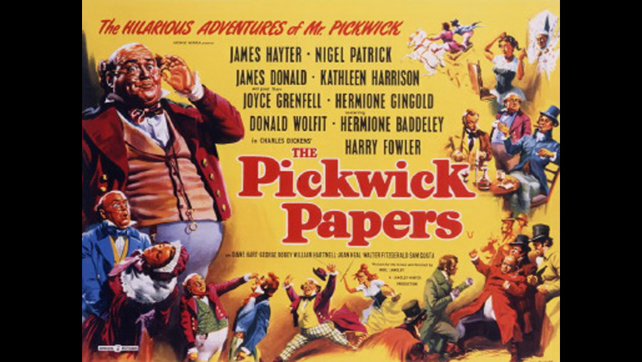

1952

CAST
Samuel Pickwick
-
James Hayter
Nathaniel Winkle
-
James Donald
Mr. Jingle
-
Nigel Patrick
Mrs. Leo Hunter
-
Joyce Grenfell
Miss Topkins
-
Hermione Gingold
Mrs. Bardell
-
Hermione Baddeley
Sergeant Buzfuz
-
Donald Wolfit
Sam Weller
-
Harry Fowler
Rachel Wardle
-
Kathleen Harrison
Tracy Tupman
-
Alexander Gauge
Augustus Snodgrass
-
Lionel Murton
Emily Wardle
-
Diane Hart
Isabella Wardle
-
Joan Heal
Irate Cabman
-
William Hartnell
Miss Witherfield
-
Athene Seyler
Job Trotter
-
Sam Costa
Tony Weller
-
George Robey
Joe, the Fat Boy
-
Gerald Campion
Mr. Wardle
-
Walter Fitzgerald
Grandma Wardle
-
Mary Merrall
Aide
-
Raymond Lovell
Mr. Justice Stareleigh
-
Cecil Trouncer
Dodson
-
D.A. Clarke-Smith
Mr. Perker
-
Noel Willman
Aide
-
Max Adrian
Roker
-
Noel Purcell
Dr. Slammer
-
Felix Felton
Fogg
-
Alan Wheatley
Mrs. Nupkins
-
Hattie Jacques
Mr. Nupkins
-
Jack McNaughton
Boy
-
David Hannaford
Arabella Allen
-
June Thorburn
Serjeant Snubbin
-
Barry MacKay
Foreman
-
Gibb McLaughlin
Onlooker
-
Arthur Mullard (uncredited)
Lady at Ball
-
Dandy Nicholls (uncredited)
CREATIVE TEAM
Director
-
Noel Langley
Screenplay
-
Noel Langley
FILMING LOCATIONS
The film was shot at Nettlefold Studios, Walton-on-Thames, Surrey, England